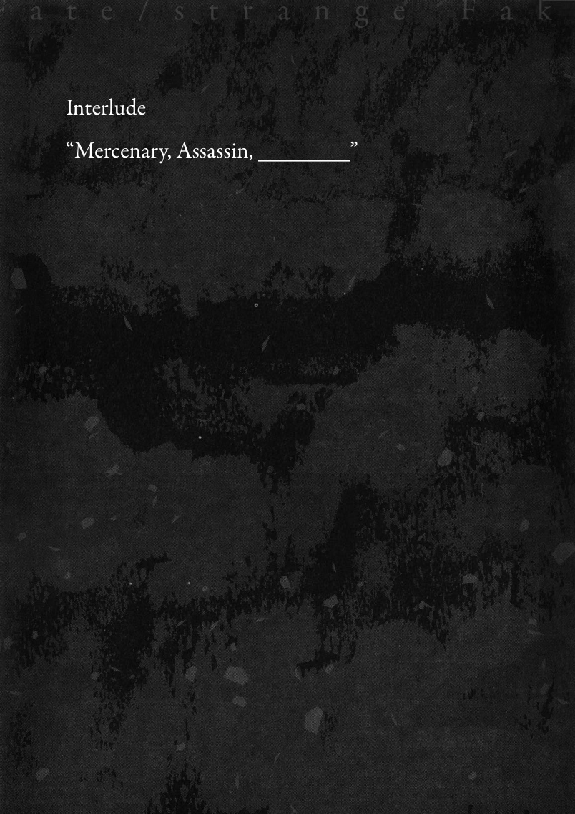
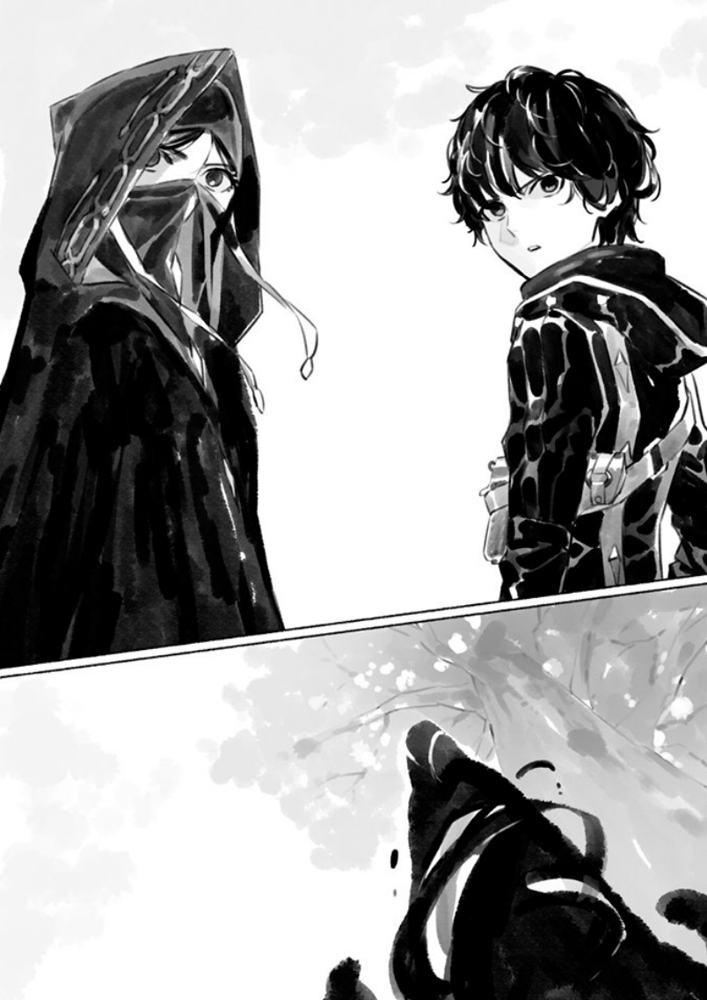

". . ."
Sigma despertou e se viu no jardim de uma casa particular. ". . .
O que aconteceu?"
Apesar da confusão, conferiu com rapidez e suavidade seu equipamento, seu estado e o entorno.
O hospital não estava à vista, e o edifício do cassino no centro da cidade podia ser visto ao longe, então ele supôs que devia estar num distrito residencial a uma boa distância dali.
Baixou os olhos e encontrou a garota Assassin deitada sobre a grama.
Havia algo como um travesseiro sob a cabeça dela, e um cobertor fino lhe cobria o corpo.
Olhando melhor, percebeu que um cobertor semelhante também tinha sido posto sobre ele e que, em vez de um travesseiro, havia uma pequena almofada onde sua cabeça estivera.
Alguém . . . colocou a gente para dormir? Assassin não parecia ferida e, quando ele se aproximou, viu que ela respirava enquanto dormia.
Já ouvi dizer que Espíritos Heroicos manifestados em corpos temporários em geral não precisam dormir . . .
Se for o caso, então esse sono pode ser resultado de algum fator externo que colocou a Origem Espiritual dela num estado de dormência.
Foi aquele hematófago que fez isso? Sigma se perguntou. Mas isso não explicava por que ele ainda estava vivo.
"Nnh . . ."
A garota Assassin parecia ter recuperado a consciência e lentamente ergueu sua figura de manto negro sobre o gramado verdejante.
"Onde . . .? O que aconteceu . . .?"
"Você está bem?"
"Sim. . . . E aquele demônio . . .?"
"Não está aqui. . . . Pelo menos, acho que não."
Ele não sentia a presença do hematófago.
Isso só deixava Sigma mais inquieto. ". . .
No fim, ele estava dizendo umas coisas bem perturbadoras . . ."
As palavras de Assassin fizeram Sigma se lembrar do que o hematófago que se chamava Jester havia dito.
"Mal posso esperar . . . para ver vocês macularem com as próprias mãos a paisagem tão bonita de lá."
"Deve haver alguma armadilha. À primeira vista não parecemos feridos, mas ele pode ter enfiado algum tipo de feitiço em nossas roupas ou em nossos corpos."
"Por que faria algo tão indireto? Ele podia ter acabado conosco enquanto estávamos inconscientes."
"Tem gente deturpada assim em todo lugar. Um dos meus superiores é desse tipo, e tenho certeza de que aquele hematófago também é."
Sigma fez a Energia Mágica circular pelo corpo de modo impessoal, procurando feitiços estranhos. Quase de passagem, deu um exemplo desse tipo de perversidade.
"Há até usuários de magia que fingem deixar alguém ir embora, mas colocam essa pessoa sob uma sugestão para matar a mulher e os filhos assim que chegar em casa. Sem motivo real nenhum, só para se divertir com a reação."
Aqueles que esqueciam o objetivo de aperfeiçoar a magia e a usavam para negócios ou para o próprio prazer.
Muitos dos usuários de magia mais cruéis e depravados se enquadravam nessa categoria.
Dito isso, magos fariam coisas ainda mais cruéis e perversas se isso estivesse alinhado com o aperfeiçoamento da magia e do Mistério, então era impossível dizer qual dos dois grupos era mais perigoso.
Assassin, que franziu a testa visivelmente diante do exemplo de Sigma, moveu a mão na direção dele e confirmou, por meio da percepção ligada a Sensibilidade Meditativa: Zabaniya, que não havia Energia Mágica anormal em seu corpo.
". . .
Não vejo sinal de nenhum feitiço estranho em você. Não sou capaz de detectar vínculos mentais que não dependam de Energia Mágica, mas . . ."
"Sim, minha própria análise também não encontrou nada. E você, está bem?"
"Não há necessidade de se preocupar."
Sigma, que não tinha escolha a não ser confiar nas palavras de Assassin, voltou a examinar os arredores . . . quando percebeu algo inquietante.
". . .?"
Se o padrão de até então se mantivesse, uma das "sombras", os familiares de Watcher, já deveria ter aparecido com algum comentário sarcástico no instante em que ele acordou.
Mas ele nem conseguia ver as sombras, e a Energia Mágica que o ligava ao seu Servo, algo que aprendera a sentir ao longo dos dois dias anteriores, estava claramente enfraquecida.
"O que . . .?"
Ele chamou telepaticamente, mas não houve resposta das sombras.
Havia algo parecido com um retorno, mas ele não conseguia trocar informações de forma significativa. Era como uma conexão de internet subitamente bloqueada por excesso de tráfego.
"O que houve?"
". . .
Não consigo entrar em contato com o meu Servo. Não acho que ele tenha morrido, mas . . ."
"Lancer . . .? Se ele não foi eliminado, então, no pior dos casos, você deve conseguir invocá-lo com um Selo de Comando."
Um Selo de Comando, é . .
. Será que acontece alguma coisa se eu usar um?
As sombras disseram mesmo que Watcher está bem alto no céu . . .
Para Assassin e para todos os outros envolvidos com ele, Sigma dizia que seu Servo era "Lancer Charlie Chaplin".
O próprio Sigma ainda não entendia o que Watcher realmente era. Mergulhou em pensamentos, ponderando como deveria usar seus Selos de Comando.
". . .
O GPS está funcionando."
Sigma confirmou que o terminal eletrônico que fazia parte de seu equipamento ainda funcionava e checou as coordenadas para localizar com precisão sua posição.
"Nossa posição relativa em relação a Crystal Hill confirma. Estamos no bairro residencial de Snowerk, um distrito de Snowfield."
Snowfield já havia sido dividida em várias cidades, que depois foram unificadas num único município. Sigma ouvira dizer que esse distrito, às vezes chamado de Cidade de Snowerk como resquício daquela época, era uma área residencial de alto padrão onde morava a elite de Snowfield.
"Vamos sair daqui. Prefiro evitar que apontem armas para a gente por invasão de domicílio."
Quem quer que tivesse deixado cobertores e travesseiros para eles não era necessariamente o dono da casa.
Sigma, ciente de que as leis estaduais sobre armas eram frouxas, até para os padrões dos Estados Unidos, começou a se dirigir para a rua . . . mas, antes que pudesse descobrir a quem pertencia o jardim, a porta da casa se abriu.
". . .
Ah, vocês acordaram?"
Um asiático de aparência despreocupada surgiu.
A visão dele deixou Sigma mais atento do que nunca, embora ele tomasse cuidado para não demonstrar isso.
Reconheceu o rosto pelos documentos que Faldeus e Francesca lhe haviam dado.
"E o senhor é . . .?"
Sigma pensou que seria falta de educação perguntar o nome de alguém quando talvez estivessem invadindo a propriedade, mas decidiu que aquela não era hora de se preocupar com isso e fez a pergunta enquanto se preparava para contra-atacar de imediato em qualquer circunstância.
O homem, porém, não demonstrou o menor sinal de ofensa e se apresentou com um sorriso gentil.
"Ah, eu sou Kuruoka. Prazer. Sou o diretor da biblioteca particular aqui do lado."
A resposta batia com os documentos.
Os Kuruoka eram, em público, os administradores de uma biblioteca particular operada em sistema de associação, e assim haviam estabelecido sua posição em Snowfield, tomando o máximo de cuidado para não chamar atenção.
Kuruoka . . .
Então esse é o pai daquela garota do hospital.
Nesse caso, foi ele quem chamou a gente até aqui?
Ele sabe da condição da filha, ou está puxando os fios dela . . .? Posso não ter tido muito tempo, mas devia ter dado prioridade a perguntar sobre ele ao Watcher.
Uma das habilidades de Watcher era perceber o que acontecia na cidade.
Mas isso se limitava a coisas perceptíveis por visão e audição; não alcançava a mente das pessoas. Era uma quantidade imensa de informação, mas Sigma só conseguia compartilhá-la interrogando as sombras, o que significava que precisava perguntar exatamente sobre aquilo que queria saber, como numa busca na web.
Agora que não conseguia entrar em contato com aquelas sombras, via-se diante de uma falta esmagadora de dados sobre o homem à sua frente.
Sigma decidiu começar se apresentando e observar a reação do homem. Tinha certeza de que ele não o conheceria, mas também não via necessidade de usar um nome falso.
". . .
Me chamam de Sigma. É vergonhoso dizer isso, mas parece que desmaiamos no seu jardim. Eu me lembro de estar na cidade ontem à noite e de me sentir mal, mas depois disso . . ."
"Ah, é mesmo? Bem, ao que parece minha filha encontrou vocês desmaiados no nosso jardim esta manhã. Estávamos lá dentro justamente discutindo se devíamos carregar vocês até uma cama."
. . .
Eu esperaria que vocês começassem ligando para o 911.
Sigma tinha perguntas, mas decidiu acompanhar a história do homem.
"Entendo. Então deve ter sido sua filha quem trouxe os cobertores."
Uma mulher que apareceu por trás do homem que se apresentou como Kuruoka, com um sorriso igualmente sereno, respondeu:
"Sim. Quando ela trouxe os cobertores, achei que tinha encontrado outro filhote dentro de casa . . . mas nunca imaginei que tivesse encontrado pessoas."
À primeira vista ela parecia natural, mas Sigma sentiu algo oco nela.
Como se confirmasse suas suspeitas, Assassin sussurrou para que só ele pudesse ouvir: "Tome cuidado. Este homem e esta mulher parecem estar sob a influência da sugestão de alguém."
Sigma também percebia isso.
Nesse caso, se surgisse alguém que não tivesse sido posto sob sugestão, o mais prudente seria desconfiar imediatamente dessa pessoa.
No mínimo, seria temerário não considerar as intenções dela. Essa foi a conclusão de Sigma . . . mas essa pessoa "não afetada" apareceu diante dele mais cedo do que esperava.
"Moço, moça . . . vocês estão bem?"
Uma garotinha pôs a cabeça para fora timidamente de trás da mãe.
Parecia ter por volta de dez anos. Deu um passo à frente e fez uma reverência apressada, mas claramente por vontade própria.
"Eu sou Kuruoka Tsubaki!"
O nome de uma garota que deveria estar hospitalizada em estado comatoso.
A garota que Assassin e a polícia haviam tentado salvar, e que deveria estar possuída por um Servo, estava em pé diante deles em perfeita saúde.
Antes que Sigma tivesse tempo de pensar no que aquilo significava . . . a garota olhou para trás dele e de Assassin e disse:
"Aquele é o meu amigo Sr. Escuro!"
E, no mesmo instante em que falou . . . uma presença estranha, que não estava ali antes, começou a crescer atrás de Sigma e Assassin.
"?!"
Os dois se viraram de imediato . . . e viram uma massa negra como azeviche parada na sombra de uma grande árvore.
Diante daquela massa de "escuridão" quase humanoide, Sigma e Assassin se puseram em guarda, completamente alertas . . . quando a voz de Tsubaki, vinda detrás deles, alcançou seus ouvidos.
"Ele é bem grandão, mas não é assustador!"

"Mal posso esperar."
Uma única figura observava o encontro de longe, o Apóstolo Morto Jester, na forma de um garoto da mesma idade de Tsubaki.
"Que cara você vai fazer quando perceber que este é o inferno mais feliz do mundo?", disse ele, com um sorriso embriagado e incompatível com a aparência juvenil. "E quando perceber que ninguém além de mim consegue sair daqui sem matar Kuruoka Tsubaki . . .
"O que você vai fazer . . . senhorita Assassin?"